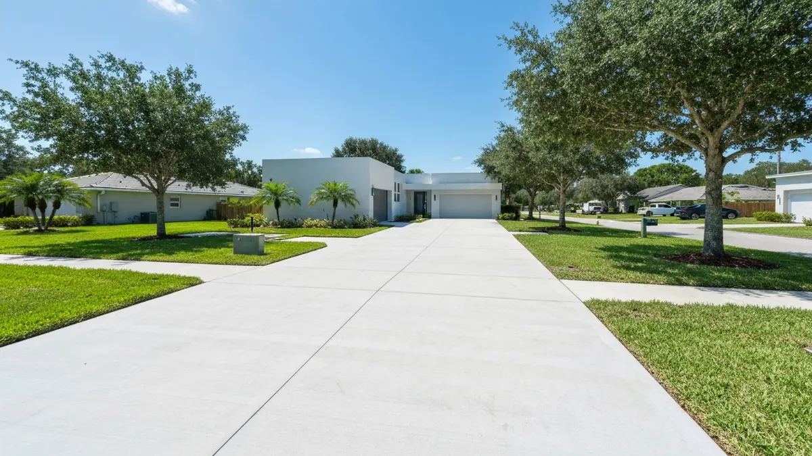

Concrete Contractors in Temple Terrace

Concrete Driveways, Patios, And Pool Decks in Temple Terrace
For Temple Terrace residents, investing in new or repaired concrete driveways, patios, and pool decks is a practical necessity, not just an aesthetic upgrade. Our USF-adjacent community often sees high foot and vehicle traffic, especially around rental properties, which quickly exacerbates wear on aging concrete. With Florida's relentless sun, heavy rain, and humid conditions, existing surfaces, many suffering from years of deferred maintenance, deteriorate rapidly. Cracked driveways become trip hazards, crumbling patios lose their appeal, and weathered pool decks compromise safety. Upgrading these surfaces significantly enhances curb appeal for landlords, ensures safety for families, and provides durable, low-maintenance solutions perfectly suited to the Temple Terrace lifestyle and climate.
Why Temple Terrace Residents Choose Tampa Concrete Pros
Tampa Concrete Pros deeply understands the unique concrete needs of Temple Terrace. Our proximity means we're intimately familiar with the local soil conditions, drainage challenges, and the specific wear patterns prevalent in older homes and rental properties near USF. We pride ourselves on quick response times and efficient project management, minimizing disruption for our Temple Terrace clients. Our reputation in the community is built on consistently delivering high-quality, durable concrete solutions that withstand the local climate and the demands of both family residences and investment properties, ensuring lasting value right here in Temple Terrace.
Our service advantages directly address Temple Terrace's specific context. We specialize in transforming neglected, unsafe concrete surfaces into robust, attractive assets, crucial for properties needing deferred maintenance addressed. For rental owners, we offer cost-effective, long-lasting solutions that boost property value and tenant satisfaction. Homeowners benefit from our expertise in crafting beautiful, resilient outdoor spaces that enhance lifestyle and property curb appeal. From slip-resistant pool decks perfect for Florida living to resilient driveways designed for high usage, our work provides peace of mind and enduring quality for every Temple Terrace project.
Our Concrete Driveways, Patios, And Pool Decks Services in Temple Terrace
- Concrete Driveway Installation & Repair: Addressing the pervasive issue of cracked and crumbling driveways common across Temple Terrace, especially in older homes and high-traffic rental areas. We ensure durable, smooth surfaces that enhance curb appeal and safety, critical for properties near USF.
- Patio Design & Construction: Creating inviting, long-lasting outdoor living spaces tailored for Temple Terrace homes, capable of enduring Florida's intense sun and frequent rains. From private retreats to entertainment areas, we build patios that add significant value and usability to your property.
- Pool Deck Resurfacing & New Installation: Essential for many Temple Terrace homes with pools, we provide non-slip, heat-reflective, and visually appealing pool deck solutions. Our work ensures safety and comfort, transforming your pool area into a beautiful, functional oasis perfect for the local climate.
- Concrete Walkways & Sidewalks: Crucial for pedestrian safety and property aesthetics, our services tackle worn or hazardous walkways, often part of general deferred maintenance in the area. We install and repair sidewalks that improve accessibility and elevate the overall curb appeal of your Temple Terrace home or business.
Serving Temple Terrace and Surrounding Areas
Tampa Concrete Pros proudly serves the entirety of Temple Terrace, a vibrant city nestled northeast of downtown Tampa, directly adjacent to the University of South Florida. Our service area encompasses all neighborhoods, from the historic charm of Riverhills along the Hillsborough River to the bustling communities surrounding Fowler Avenue and Bullard Parkway. We frequently complete projects on streets like 56th Street, providing solutions for homes and businesses from the eastern boundaries towards Interstate 75. Whether you're near the Temple Terrace Golf & Country Club or closer to the USF campus, we're your local concrete experts. We know the area's specific character, from its unique geography to its specific residential and commercial needs, making us the ideal choice for any concrete project in Temple Terrace.
Frequently Asked Questions About Concrete Driveways, Patios, And Pool Decks in Temple Terrace
How much does concrete driveways, patios, and pool decks cost in Temple Terrace?
Costs in Temple Terrace vary based on project scope, demolition needs, and chosen finishes. A standard driveway for a typical single-family home might range from $4,000-$8,000, while larger patios or pool decks could start from $6,000-$15,000+. Factors like decorative stamping, color, and site accessibility common to older Temple Terrace properties also influence pricing. We offer free, detailed estimates.
How long does concrete driveways, patios, and pool decks take for a typical Temple Terrace home?
Most standard concrete driveway projects for a typical Temple Terrace home are completed within 3-5 days, including prep, pouring, and initial curing. Larger projects like patios or pool decks with complex designs might extend to 1-2 weeks. Weather conditions, especially Florida's rain, can also impact the timeline, though we always aim for efficient completion.
Do you serve all of Temple Terrace?
Absolutely, Tampa Concrete Pros serves all neighborhoods and areas within Temple Terrace. From the communities directly bordering the USF campus to residences closer to the Hillsborough River, like those in Riverhills, and properties along major thoroughfares such as Fowler Avenue and 56th Street, our team covers the entire city. No corner of Temple Terrace is outside our service reach.
How can concrete upgrades address deferred maintenance in Temple Terrace properties?
New concrete surfaces are a highly effective way to tackle deferred maintenance. Replacing cracked driveways, unstable walkways, or deteriorating patios immediately eliminates safety hazards and prevents further structural damage. For rental properties, these upgrades significantly boost curb appeal, attract higher-quality tenants, and demonstrate a commitment to property upkeep, transforming a liability into a valuable asset that requires minimal future attention.
Ready to schedule your concrete driveways, patios, and pool decks service in Temple Terrace? Call us today or use the contact form above — we serve Temple Terrace and all surrounding areas of Tampa, FL. Most Temple Terrace jobs are scheduled within 48-72 hours.
Ready to Start Your Temple Terrace Project?
Get a free, no-obligation quote for your concrete project. Our team is ready to help transform your Temple Terrace property.
Call (813) 705-9021